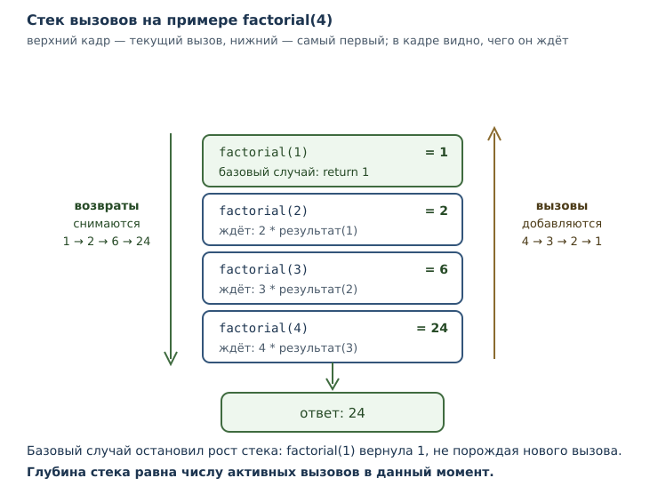
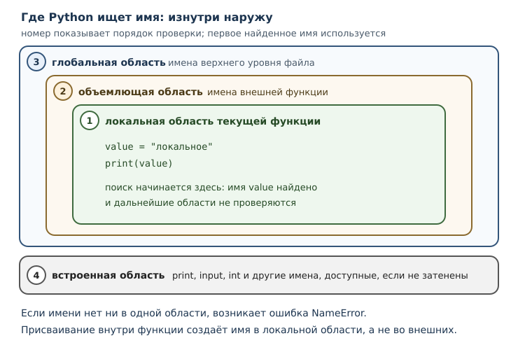

Стек вызовов, области видимости и рекурсия
Как исполняется вызов функции, зачем нужна рекурсия и как устроены области видимости.
В этой главе
В прошлой главе функция выглядела как чёрный ящик: передали аргументы — получили результат. Пока вызовы идут по одному, этого достаточно. Но программы состоят из функций, которые вызывают другие функции, а те — третьи. В момент, когда ошибка случается на глубине пяти вызовов, нужно понимать, кто кого вызвал и какие имена были видны в каждом месте.
Ответ на оба вопроса даёт одна и та же конструкция — стек вызовов: список активных вызовов, в котором каждый вызов хранит свои параметры и локальные имена. Из этого устройства естественно вырастают правила видимости имён и приём, который называется рекурсией: функция, вызывающая саму себя.
Эта глава объясняет, что происходит в момент вызова. Это не абстракция:
именно устройство стека объясняет порядок вывода вложенных вызовов, ошибку
UnboundLocalError и сообщение о превышении глубины рекурсии.
8.1 Что вы сможете после этой главы
К концу главы вы будете уметь следующее.
- описывать, что добавляется в стек при вызове и что снимается после возврата;
- объяснять, почему вложенные вызовы печатают строки в обратном порядке;
- различать локальную, объемлющую, глобальную и встроенную области видимости;
- понимать, когда нужна инструкция global и почему её применяют редко;
- писать рекурсивные функции с базовым случаем и объяснять их завершение;
- распознавать предел рекурсии и отличать ограничение CPython от свойства языка.
8.2 Стек вызовов
Стек вызовов — структура данных, в которой хранятся активные вызовы функций: каждый вызов добавляет запись, а завершение её снимает. Стек работает по принципу «последним пришёл — первым вышел»: последний начатый вызов завершается раньше остальных.
Пока функция выполняется, вызовы внутри неё не могут завершиться раньше, чем она сама. Отсюда и порядок: самый глубокий вызов заканчивается первым, самый внешний — последним.
def inner():
print("внутри inner")
def outer():
print("начало outer")
inner()
print("конец outer")
outer()
начало outer
внутри inner
конец outer
Проследим за стеком:
- Вызов
outer()добавляет в стек запись дляouter. Начинается исполнение его тела, печатаетсяначало outer. - Вызов
inner()добавляет вторую запись, поверх первой. Печатаетсявнутри inner. - Тело
innerзакончилось — запись снимается, управление возвращается вouterна то место, где был вызов. - Печатается
конец outer, записьouterснимается, стек пуст.
Здесь порядок вывода совпадает с порядком строк в теле outer, но настоящая
причина — стек: inner завершается раньше, чем outer доходит до следующей
строки. Стек становится незаменим, когда вызовы вложены глубже или рекурсивны:
тогда порядок выполнения уже нельзя прочитать сверху вниз по тексту программы.
Чем полезно это знание? Когда вы читаете сообщение об ошибке, интерпретатор показывает цепочку активных вызовов — от самого внешнего к самому глубокому. По этой цепочке видно, как программа пришла в проблемное место.
Traceback (most recent call last):
File "program.py", line 7, in <module>
a()
File "program.py", line 2, in a
b()
File "program.py", line 5, in b
return 1 / 0
ZeroDivisionError: division by zero
Читают её снизу вверх: последняя строка — что случилось, выше — где именно, ещё выше — кто вызвал это место. Чтение сообщений об ошибках подробно разберём в главе 11, а пока запомните главное: цепочка вызовов в сообщении — это и есть стек в момент сбоя.
8.3 Кадр стека
Кадр стека — запись о конкретном активном вызове: его параметры, локальные имена и точка возврата. У каждого вызова свой кадр, даже если функция одна и та же.
def show(n):
n = n + 1
print(n)
show(1)
show(10)
2
11
Первый вызов создал кадр с параметром n = 1; после возврата кадр исчез.
Второй вызов создал новый кадр с n = 10. Значение из первого вызова никак не
повлияло на второй: кадры независимы, хотя функция одна.
Отсюда важное следствие: локальные имена не «общие для функции», они общие для вызова. Два одновременных вызова одной функции (например, при рекурсии) имеют два разных кадра с разными значениями одноимённых параметров.

8.4 Области видимости
Область видимости — правило, определяющее, какое имя видит код в данной точке: локальное, объемлющее, глобальное или встроенное. Это не «место в файле», а именно правило поиска.
В Python четыре уровня:
| Уровень | Что содержит | Где виден |
|---|---|---|
| локальная | имена, созданные в текущей функции | только внутри неё |
| объемлющая | имена внешней функции | во вложенной функции |
| глобальная | имена верхнего уровня файла | во всём файле |
| встроенная | имена вроде print, input, int |
если не затенена |
Поиск идёт изнутри наружу: сначала локальная область, затем объемлющая, затем
глобальная, затем встроенная. Первое найденное имя используется. Если имени
нет нигде, возникает NameError.
x = "глобальное"
def outer():
x = "объемлющее"
def inner():
x = "локальное"
print(x)
inner()
print(x)
outer()
print(x)
локальное
объемлющее
глобальное
Три имени x живут в трёх разных областях, и каждое print видит ближайшее.
Это не ошибка и не путаница: так устроен поиск. Но читаемость такого кода
низкая, поэтому в реальных программах одинаковые имена на разных уровнях лучше
не использовать без необходимости.

Локальная область видимости знакома вам по прошлой главе: имя, созданное в функции, не видно снаружи. Новое здесь — то, что вложенная функция видит имена внешней.
8.5 Объемлющая область видимости
Объемлющая область видимости — область внешней функции, имена которой видны вложенной функции. Она появляется, когда одна функция определена внутри другой.
def outer():
message = "привет"
def inner():
print(message)
inner()
outer()
привет
inner не имеет собственного имени message, поэтому поиск поднимается на
уровень выше и находит его в кадре outer. Такой доступ работает только на
чтение: если inner попытается присвоить message, Python создаст локальное
имя и внешнее останется прежним.
Переприсвоить имя объемлющей области из вложенной функции можно только со специальным объявлением. Оно понадобится, когда речь пойдёт о замыканиях, — это тема главы 22. Пока достаточно понимать направление поиска: изнутри наружу.
Практическая рекомендация: вложенные функции полезны, когда внутренняя нужна только внешней. Если функция нужна кому-то ещё, определяйте её на верхнем уровне.
8.6 Глобальная область видимости и инструкция global
Глобальная область видимости — область модуля: имена, созданные на верхнем уровне файла. Они видны во всех функциях этого файла.
Читать глобальные имена можно свободно — это мы уже видели. Проблема возникает при присваивании: если функция присваивает имя, Python считает его локальным, даже если такое же имя есть наверху.
counter = 0
def broken():
counter += 1
broken()
UnboundLocalError: cannot access local variable 'counter' where it is not associated with a value
Инструкция global объявляет, что имя относится к глобальной области, а не к локальной. После такого объявления присваивание меняет глобальное значение.
counter = 0
def bump():
global counter
counter += 1
bump()
bump()
print(counter)
2
Работает, но подумайте, чем вы за это платите. Функция bump теперь зависит от
внешнего состояния: её нельзя вызвать в отрыве от программы, нельзя проверить
без подготовки глобального имени, и её поведение меняется от того, сколько раз
её вызвали раньше. В маленькой учебной программе это терпимо, в большой —
источник трудноуловимых дефектов.
Практическое правило: global применяют редко. Если функция должна вернуть изменённое значение — пусть она его вернёт, а вызывающий код решит, куда его записать. Инструкция global уместна в узких случаях: счётчики, настройки модуля, состояние, которое действительно одно на всю программу.
8.7 Рекурсия
Рекурсия — приём, при котором функция вызывает саму себя для меньшей
подзадачи. Это не особый синтаксис: вызов factorial(n - 1) ничем не
отличается от любого другого вызова. Особенным его делает то, что кадр вызова
оказывается в стеке поверх такого же кадра.
Классический пример — факториал. Факториал числа n — произведение всех чисел
от 1 до n; при этом n! = n * (n - 1)!.
def factorial(n):
if n <= 1:
return 1
return n * factorial(n - 1)
print(factorial(5))
print(factorial(3))
120
6
Базовый случай — условие, при котором функция возвращает результат без
нового вызова. Здесь это n <= 1. Без базового случая рекурсия была бы
бесконечной: каждый вызов порождал бы следующий, и стек рос бы, пока
интерпретатор не остановит его по пределу рекурсии.
Разберём factorial(3) по шагам:
factorial(3):3 > 1, нужен3 * factorial(2). Кадр сn = 3ждёт.factorial(2): нужен2 * factorial(1). Кадр сn = 2ждёт.factorial(1): базовый случай, возвращает1. Кадр снимается.- В кадре
n = 2получаем2 * 1 = 2, возвращаем2. Кадр снимается. - В кадре
n = 3получаем3 * 2 = 6, возвращаем6. Кадр снимается.
Обратите внимание: пока идёт спуск, ни один результат ещё не вычислен — все кадры ждут. Вычисления начинаются на обратном пути, когда базовый случай завершил самый глубокий вызов.
Тот же результат можно получить циклом:
def factorial_loop(n):
result = 1
for i in range(2, n + 1):
result *= i
return result
print(factorial_loop(5))
120
Рекурсия не быстрее и не «правильнее» цикла. Она бывает выразительнее, когда задача естественно сводится к меньшей копии себя: обход дерева, разбор вложенной структуры, алгоритмы «разделяй и властвуй». Когда структура задачи линейная, цикл обычно проще.
Рекурсивная функция обязана приближаться к базовому случаю. В factorial
каждый вызов уменьшает n на единицу, поэтому до 1 можно дойти за конечное
число шагов. Если аргумент не уменьшается, рекурсия не завершится.
def digit_sum(n):
if n < 10:
return n
return n % 10 + digit_sum(n // 10)
print(digit_sum(1234))
10
Здесь базовый случай — однозначное число. Каждый шаг отбрасывает последнюю цифру, поэтому число шагов равно числу цифр.
8.8 Предел рекурсии
Предел рекурсии — ограничение глубины стека вызовов, которое защищает от
переполнения. Если рекурсия не доходит до базового случая, программа
останавливается с ошибкой RecursionError, а не падает молча.
def endless(n):
return endless(n + 1)
endless(0)
RecursionError: maximum recursion depth exceeded
Сообщение говорит буквально: «превышена максимальная глубина рекурсии». Интерпретатор заметил, что стек растёт слишком сильно, и остановил программу — это лучше, чем исчерпать память.
Важно различать уровни. RecursionError и само понятие предела — часть
поведения Python, но конкретное число задаёт реализация. В CPython предел
по умолчанию около 1000 вызовов; в других реализациях значение может
отличаться. Это не гарантия языка, а деталь реализации, о которой полезно
знать, но нельзя опираться на точное число в переносимом коде.
Что делать, если глубины не хватает? Обычно — переписать алгоритм циклом. Увеличение предела допустимо как временная мера для конкретной задачи, но оно не решает проблему: растущий стек всё равно ограничен памятью. Кроме того, слишком глубокая рекурсия легко превращается в медленный и хрупкий код.
8.9 Собираем вместе
Сравним два естественно рекурсивных алгоритма. Первый — уже знакомый факториал, второй — наибольший общий делитель по алгоритму Евклида, где рекурсия заменяет цикл почти без потерь в ясности.
def gcd(a, b):
if b == 0:
return a
return gcd(b, a % b)
print(gcd(84, 36))
print(gcd(1071, 462))
12
21
Базовый случай — b == 0: тогда ответом служит a. Иначе задача сводится к
паре (b, a % b), и остаток строго меньше b, поэтому последовательность
вызовов конечна. Для 84 и 36 цепочка такая: (84, 36) → (36, 12) → (12, 0),
ответ 12.
Обратите внимание на две вещи, которые делают эту рекурсию корректной: базовый случай существует, и каждый шаг уменьшает второй аргумент. Проверять эти два свойства полезнее, чем запоминать пример.
8.10 Типичные ошибки
- Забыть базовый случай. Рекурсия не остановится и завершится
RecursionError. - Базовый случай недостижим. Например,
n == 1при шагеn -= 2: чётные числа до единицы не дойдут. - Не уменьшать аргумент. Вызов
factorial(n)внутриfactorial(n)— бесконечная рекурсия, даже если базовый случай записан. - Ожидать, что локальные имена общие для функции. Они принадлежат кадру, а кадров может быть несколько.
- Считать, что вложенная функция может менять имя внешней. Присваивание создаёт локальное имя; для изменения нужен особый механизм из главы 22.
- Пользоваться global без нужды. Функция, меняющая глобальное состояние, труднее проверяется и хуже переносится.
- Путать глобальную область с встроенной.
printдоступен всегда, а имя верхнего уровня — только в своём файле. - Увеличивать предел рекурсии вместо переписывания алгоритма. Это лечит симптом, а не причину.
8.11 Упражнения
1. Порядок вывода
Что выведет программа? Запишите ответ до запуска и объясните порядок строк.
def first():
print("первая")
def second():
first()
print("вторая")
second()
2. Кадры независимы
Что выведет программа и почему второе число не зависит от первого?
def step(n):
n = n * 10
print(n)
step(1)
step(2)
3. Три области видимости
Определите, какие строки выведет программа, и объясните, какое имя видит
каждый print.
value = "глобальное"
def outer():
value = "объемлющее"
def inner():
value = "локальное"
print(value)
inner()
print(value)
outer()
print(value)
4. Чтение из объемлющей области
Почему следующий код работает, хотя message не передана в inner как
параметр?
def outer():
message = "готово"
def inner():
print(message)
inner()
outer()
5. global
Исправьте программу, чтобы она напечатала 3, и объясните, почему без
исправления возникает ошибка.
total = 0
def add():
total += 1
return total
add()
add()
add()
print(total)
6. Исправление рекурсии
Программа завершается ошибкой. Найдите причину и исправьте функцию.
def countdown(n):
print(n)
countdown(n - 1)
countdown(3)
7. Факториал
Напишите рекурсивную функцию factorial(n) с базовым случаем и проверьте её на
0, 1 и 6. Чему равно 6!?
8. Сумма цифр
Напишите рекурсивную функцию digit_sum(n), которая возвращает сумму цифр
натурального числа. Проверьте на 1234 и 9.
9. Предел рекурсии
Объясните, почему функция ниже приводит к RecursionError, и перепишите её
циклом с тем же результатом.
def total(n):
return n + total(n - 1)
print(total(5))
10. Мини-задача: Евклид
Напишите рекурсивную функцию gcd(a, b) для наибольшего общего делителя.
Проверьте на (84, 36) и (17, 5). Объясните, почему рекурсия завершается.
8.12 Проверка понимания
- Что такое стек вызовов и почему он работает по принципу «последним пришёл — первым вышел»?
- Что хранится в кадре стека?
- Почему два вызова одной функции не мешают друг другу?
- Какие четыре области видимости существуют и в каком порядке идёт поиск?
- Чем глобальная область отличается от встроенной?
- Зачем нужна инструкция global и почему её не любят?
- Что такое базовый случай и что будет, если его забыть?
- Почему предел рекурсии нельзя считать гарантией языка?
- Когда рекурсия уместнее цикла?
8.13 Что дальше
Вы понимаете, как исполняется вызов и как ищутся имена. Но до сих пор вся программа живёт в одном файле. Настоящие проекты состоят из многих файлов, поэтому дальше речь пойдёт о том, как Python находит код в них: появятся модули, пакеты и инструкция import — а вместе с ними и точка входа программы.